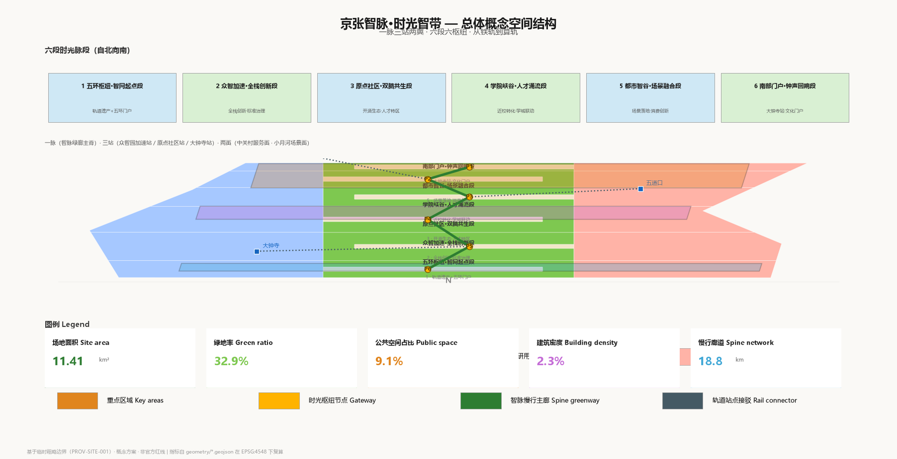
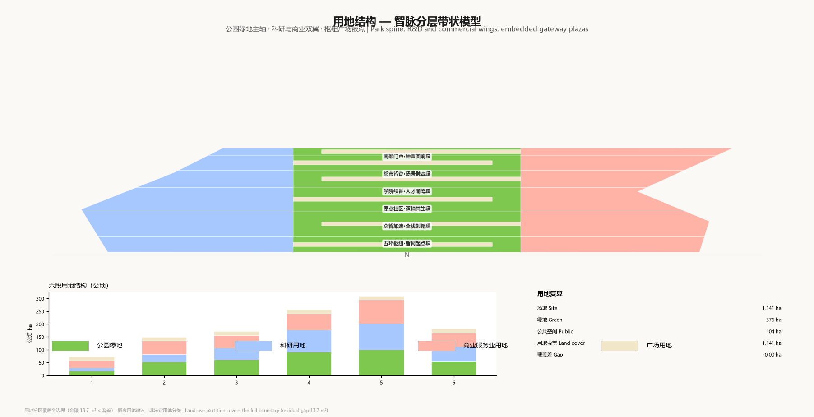
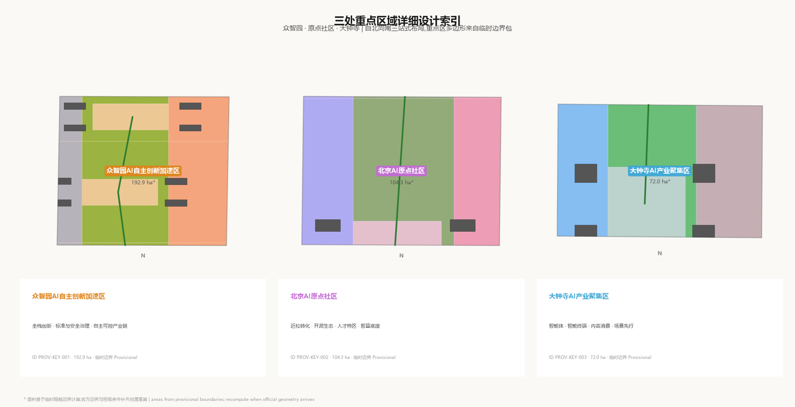
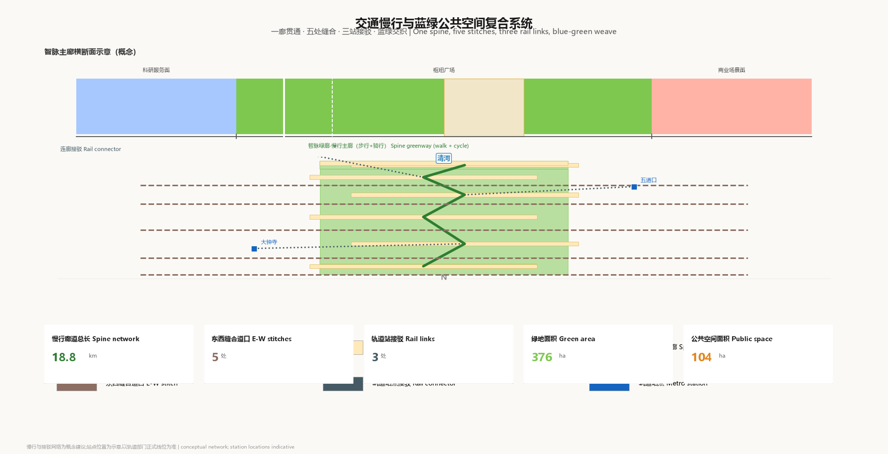
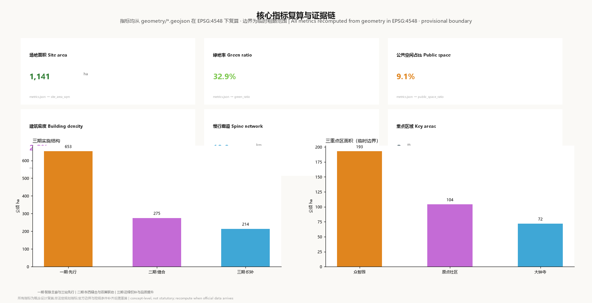

京张智脉·时光智带——从铁轨到算轨的百年京张AI创新带概念城市设计
以京张铁路遗址公园为主轴的AI创新带概念城市设计：一脉三站两翼的空间结构、六段六枢纽的时光叙事、三处重点区域详细设计，全部基于临时粗略边界生成并标注复算要求。
京张智脉·时光智带——从铁轨到算轨的百年京张AI创新带概念城市设计
设计依据与资料清单
本方案以北京市规划和自然资源委员会海淀分局 2026 年 5 月 9 日发布的《百年京张AI创新带城市设计国际方案征集资格预审公告》为第一依据 来源，以仓库维护者登记的 brief/site-package/（设计简报、面向智能体任务书、允许设计空间、临时粗略边界、枚举与规划限额）为机器可读依据 来源。来源用途边界以 data/source_registry.json 登记为准：公告与任务书属于 formal-ready 资料，临时边界属于 provisional-only 资料，未清权或未公开资料一律排除 来源。
**边界前提（必须全文遵守）**：组织方尚未发布官方红线与官方重点区 polygon。本方案使用 brief/site-package/geometry/provisional_boundaries.geojson 中的临时粗略边界生成全部图层，几何特征在提交包内标记为 geometry_role=provisional_constraint、official_boundary=false 来源 来源。临时边界只能用于方案生成、自检、可视化和设计讨论，不能作为官方红线、审批依据、精确面积依据或法定控制结论；官方 polygon 发布后，site boundary、key areas、land use、roads、green space、public space、buildings、phasing 与全部面积类指标必须整体重算 空间数据 空间数据。
**资料清单与用途边界**。本方案实际使用的资料分为四类：第一类是公告与任务书等 formal-ready 资料，可用于全部设计判断；第二类是临时粗略边界等 provisional-only 资料，仅用于方案生成与展示，标注 provisional_constraint；第三类是背景性公开资料（全球案例、标准条文），用于机制转译；第四类是未清权或未公开资料，一律不进入本方案。data/source_registry.json 登记了每份资料的用途边界，本方案严格遵守：凡声明 provisional-only 的几何资料，本方案从未以"官方"或"精确"口径表述 来源 来源。
**数据缺口与复算承诺**。当前公开场地包缺少四类关键资料：官方红线边界、官方重点区 polygon、控规法定指标（容积率/高度/退线/道路红线）、现状建筑与权属数据。这些缺口全部登记在 assumptions.json 与 missing_data_checklist.csv 对应项下。本方案承诺：官方 polygon 发布后，geometry 全部图层、metrics.json 全部 known 指标、三处重点区面积与正文所有带数字的结论必须重新计算并更新，任何直接引用旧数值的图纸与 HTML 同步再生成；在此之前，所有面积数值均标注"基于临时粗略边界复算"。这一承诺写入 深度 并在 self_check.json 的相应检查项中体现 深度。
方案的组织逻辑不是"愿景口号+图纸"，而是"公告任务→空间图层→可复算指标→专业标准→待确认事项"的证据链：每条任务在 compliance_matrix.json 中挂接章节、图层、指标与图纸；每项专业深度由 design_depth_matrix.json 校验；每个数值由 geometry/*.geojson 在 EPSG:4548 下复算并经 spatial_review.py 复核 来源 深度 指标。设计依据的完整机器索引见 sources.json、metrics.json 与三个矩阵文件，正文不重复罗列。

**术语与口径约定**。本方案全文区分三类口径：**法定口径**——官方红线与控规法定指标，缺资料时一律不编造，统一标注 unknown 或"待确认"；**建议口径**——设计概念、分期顺序、运营机制等非强制内容，统一标注"概念建议"；**复算口径**——由临时边界几何直接计算得到的面积与比例，统一标注"基于临时粗略边界复算"。正文出现数字时必带口径标签，例如"临时复算约 192.9 公顷""概念宽度约 480 米""约 18.8 km 慢行廊道"；图件与 HTML 遵循同一口径体系，防止数字被误读为官方审定值。metrics.json 对每个指标登记状态（known/unknown）、复算公式与置信度，assumptions.json 登记全部前提，口径可机器校验 来源 深度。评审者若发现任何数字缺少口径标签，可视为表达缺陷要求修正；正文中的所有"约"字均指临时边界复算值的取整，不隐含官方精度。
**提交包的机器可读性**。本提交包除人类可读正文与图纸外，全部结论均可机器复核：几何以九份 GeoJSON 为准（坐标系 EPSG:4326 交换、EPSG:4548 复算），指标以 metrics.json 为准（公式+状态+置信度），任务对应以 compliance_matrix.json 为准（任务→章节→图层→指标→图纸），标准与深度以 standard_matrix.json 与 design_depth_matrix.json 为准，包结构与哈希以 manifest.json 为准，自检结果以 self_check.json 为准 来源 来源 深度。任一文件与正文结论不一致，均以机器文件为准并视为正文表达缺陷；这种"机器为主、文字为辅"的组织方式，使评审者无需依赖对 AI 生成文本的信任，即可独立复核全部空间结论。
**图件与几何的关系**。五组图件（总览、用地结构、重点区域、交通蓝绿、核心指标）是对几何数据的可视化解释，非几何数据的替代品；图件标注了坐标系、复算口径与"概念建议"水印，尺寸与版式符合 A 系列图纸规范 空间数据 空间数据。图件再生成脚本为 gen_tools/figures.py（开源，见提交包附注），评审者可复现任一图件并与几何数据核对；图件中的任何视觉元素（颜色、线型、标注）均对应几何属性，不添加几何中不存在的空间信息 来源 标准。
三层范围工作框架
方案按照公告确定的三层范围组织工作 来源 标准：
| 层级 | 范围 | 设计问题 | 数据落点 |
|---|---|---|---|
| 统筹研究范围 | 约 43.6 平方公里 | AI 产业生态、未来城市形态、三区两翼协同 | compliance_matrix.json、standard_matrix.json |
| 总体设计范围 | 约 11.4 平方公里 | 城市更新、用地结构、交通市政、风貌控制 | 空间数据、空间数据 |
| 重点区域范围 | 约 368.4 公顷（临时边界复算 369.3 公顷） | 三处片区详细设计 | 空间数据 空间数据 空间数据 |
三层不是互相割裂的图纸集合：统筹研究决定产业与城市形态判断，总体设计把判断落实到空间结构与更新项目，重点区域详细设计验证具体地块、建筑、交通、公共空间与 AI 场景的可实施性 深度 深度。
**三层范围的几何界定与设计深度**。统筹研究范围约 43.6 平方公里，是公告确定的产业战略与未来城市研究边界，本层产出三大定位、五大功能、三区两翼协同回路与命名视觉系统，不产出法定图纸；总体设计范围约 11.4 平方公里，以提交临时边界为几何基准 空间数据，产出用地分区、建筑概念、交通网络、蓝绿系统与分期结构，达到控制性详细规划的城市设计深度 标准；重点区域范围约 368.4 公顷（临时边界复算 369.3 公顷 指标），对应三处重点片区，产出详细设计小方案，达到规划综合实施方案的城市设计深度 深度。三层成果形式分别为：战略研究与命名系统（正文+图件）、控规深度城市设计（图层+指标+图纸）、重点片区详设（分片区图纸+项目清单）。
**三层之间的转译机制**。每层都通过"判断→图层→指标"闭环落到机器可复核对象：统筹层的三区两翼判断转译为总体层的用地结构（西翼科研 0802、东翼商业 05、绿廊 1401）空间数据；总体层的空间结构转译为重点区的功能分区与拆改留分类 空间数据；重点区的实施需求转译为更新项目清单与分期 空间数据 深度。任何一层出现无法从结构化数据复算的判断，都会被降级为待确认事项，这正是本方案"可讨论、可复核、可替换官方边界后重算"原则的落地方式。
本方案总体概念为**"京张智脉·时光智带"（Jingzhang Time-Vein）——从铁轨到算轨**。空间上形成"一脉三站两翼"：一脉指以京张遗址公园为主轴的南北贯通智脉绿廊（概念宽度约 480 米，贯通全线）；三站指众智园AI自主创新加速区、北京AI原点社区、大钟寺AI产业聚集区三处重点片区作为"AI 加速站/原点社区站/大钟寺站"；两翼指西侧中关村科研服务翼与东侧商业场景翼。空间模型按六段六枢纽组织：自北向南分为五环枢纽、众智加速、原点社区、学院峡谷、都市智谷、南部门户六段时光脉段，每段设一处时光枢纽节点 空间数据 空间数据。该结构不是新增红线，而是把公告三层范围转译为可制图、可复算、可分期的空间工作框架。

**三层范围与公告口径的差异处理**。公告给出的统筹研究范围约 43.6 平方公里是战略研究边界，本方案不为其制作法定图纸，仅产出定位、功能、案例与机制转译；总体设计范围约 11.4 平方公里在公告口径下尚无官方 polygon，本方案以临时粗略边界为几何基准并全程标注，官方边界发布后按"边界替换→图层重切→指标重算→图纸重绘"四步更新 空间数据 来源；重点区域约 368.4 公顷为公告口径，临时边界复算为 369.3 公顷，差异约 0.9 公顷（0.24%），源于临时边界与公告口径的取定差异，本方案以复算值作图、以公告值为对照 指标 来源。三层范围不是套叠的红线层级，而是"战略研究—空间设计—详设验证"三个工作深度；每一层都单独列出其输入资料、输出成果与重算触发条件，确保官方数据发布后更新成本可预测。
**三层成果与图件对应**。统筹层成果包括：三大定位与五大功能说明、六案例机制转译、命名与视觉系统、产业与未来城市形态判断，对应 site-overview.png 与指标章节的绩效类指标；总体层成果包括：用地分区图层 空间数据、交通网络图层 空间数据、蓝绿系统图层 空间数据、分期图层 空间数据，对应 land-use-structure.png、mobility-bluegreen.png、metrics-evidence.png 三张图件与 A0 展板；重点层成果包括：三处重点区分区详设与更新项目清单，对应 key-areas.png 与 A3 文册。每一层成果都登记在 manifest.json 与 compliance_matrix.json 中，评审者可从任务反查成果、从成果反查图层、从图层反查指标 来源 深度。三层成果合计构成完整提交包，缺层即视为任务未完成，这一覆盖关系由 compliance_matrix.json 的层级列自动校验。
**三层的工作深度边界**。统筹层不做用地划分与建设控制，只做产业与形态判断，防止把战略研究误当法定规划；总体层做用地结构与建设建议，但所有法定控制（容积率、高度、退线）均标注待确认，防止把建议当控制；重点层做详设小方案，但所有建筑与工程结论均标注方向性，防止把概念当实施图。三层之间以"转译表"衔接：统筹层的功能需求转译为总体层的用地代码，总体层的空间结构转译为重点区的功能分区，重点区的实施需求转译为更新项目与分期 空间数据 深度。这种深度分层同时服务于评审效率与专业严谨性：评审者可先看统筹层的战略判断是否符合征集意图，再逐层验证空间落位的可复算性 标准 标准。
统筹研究范围产业与未来城市研究
统筹研究范围面向 43.6 平方公里，回答"什么样的 AI 创新生态需要什么样的城市形态"。方案提出**三大定位**——百年京张文化带、都市 AI 生活体验带、AI 融合创新带；**五大功能**——策源孵化、全栈研发、标准治理、场景试验、公共体验；**三区两翼协同回路**——三处重点片区通过智脉绿廊连接高校策源、产业转化与公共消费，两翼分别承接中关村科技服务外溢与商业消费场景 来源 标准。
**命名与视觉识别（agent.1 任务展开）**：方案命名"京张智脉·时光智带"，把"京张铁路—百年时光"与"AI 算力—数据流动"统一为"时间"主题。Logo 概念为"双轨成脉"：两条平行轨道线在中部交汇后化为数据流箭头，形似"∞"与道岔的结合，表达铁轨向算轨的转化、历史与未来的交汇 深度。色彩系统：钢轨蓝（遗产与工程）、生态绿（智脉绿廊）、钟声金（人文与钟鼓文化）。视觉规范在 visual/index.html 与图件中统一使用，所有品牌、字体与图形均为原创设计，不引用未清权标识。
**全球 AI 创新生态案例（agent.2 任务展开）**，选择六个可转化为空间机制的案例：
1. **斯坦福-帕洛阿尔托走廊**：大学-产业园-风险资本同廊道布局，策源-转化-融资一体；转化为原点社区"近校 500 米孵化圈"与学院峡谷段的校企缝合。 2. **伦敦国王十字车站改造**：铁路遗产与知识经济共存，国王十字站 120 公顷更新以公共空间先行、产业后置；转化为京张智脉"公共空间先行、产业渐进填充"的更新顺序。 3. **新加坡纬壹科技城（one-north）**：研发-居住-休闲混合的"工作-生活-学习-休闲"街区，公交优先、步行成环；转化为众智园"花园型全栈街区"的混合度控制。 4. **特拉维夫 Sarona 街区**：奥斯曼铁路站房活化成为创业社区客厅，遗产建筑低强度改造；转化为六处枢纽"站房活化+创新客厅"的节点模式。 5. **杭州云栖小镇**："大会+小镇"运营模式，年度开发者大会成为空间品牌与招商入口；转化为"全球 AI 活动周"与"大钟寺站场域"的运营锚点。 6. **纽约硅巷（SoHo-Flatiron）**：老城街区低成本空间孕育创业生态，不依赖新建园区；转化为五道口-学院路存量街区"以旧促新"的改造策略。
这些案例指向三条可复制机制：**公共空间先行的更新顺序、遗产活化与创新客厅并置、运营活动反哺空间品牌**，分别落实为分期顺序、枢纽节点功能与年度活动体系 来源 深度。
未来城市形态研究回应 AI 对工作、生活、社交、交通与公共服务的改变：方案把 AI+交通（慢行优先与轨道接驳）、连续绿色空间（智脉绿廊+清河/小月河蓝网）、创新服务设施（孵化、展示、测试、发布）与国际交往氛围落实为可定位的功能区、节点、廊道和场景 标准 深度。AI 创新指数、人才密度、产业空间等绩效指标为运营校准类指标，列入指标章节与 metrics.json，不作为审定规划条件。
**AI 新质生产力对城市形态的五个转变判断**。第一，从"园区即容器"到"生态即网络"：创新生态不再依赖单一产业园区，而是高校策源、企业转化、公共体验在慢行与绿廊网络中连续分布，因此本方案用贯穿全线的智脉绿廊替代孤立园区边界 空间数据。第二，从"通勤优先"到"近距即创"：算力与协作工具使研发接近生活成为可能，原点社区以"近校 500 米孵化圈"表达这一转变 空间数据。第三，从"功能分区"到"时段复合"：同一空间在日间承载研发测试、傍晚承载发布路演、周末承载公共体验，六处时光枢纽广场正是"时段复合"的空间载体 空间数据。第四，从"人的空间"到"人机共享空间"：AI 交通、巡检与测试智能体将占用公共空间的时间切片，安全治理沙盒与慢行导航场景定义了人机共享的边界规则 来源。第五，从"蓝图规划"到"运营迭代"：年度活动体系与场景开放机制使空间在运营中持续校准，长期运营设计（agent.6）因此与空间设计同等重要 标准。
**产业生态的空间落位判断**。AI 产业链可概化为"策源—转化—加速—聚合—应用"五个环节：策源环节依托高校与科研院所，落位学院峡谷段与原点社区近校区；转化环节依托孵化器与转化街，落位原点社区成果转化街与五道口近校圈；加速环节依托测试场与标准治理设施，落位众智园全栈创新段；聚合环节依托展示、路演与数据要素服务，落位大钟寺聚集区；应用环节依托两翼商业与公共服务界面，落位于东翼商业场景带 空间数据 空间数据。五环节对应五类空间载体，由智脉绿廊的慢行与公共空间串联，形成"一条绿廊、五个环节、三类节点"的产业空间骨架 空间数据。
人才与配套按"近校居住、枢纽交往、绿廊体验"配置：人才公寓与社区服务依托两翼地块，交往与发布空间依托枢纽广场，体验与活动空间依托绿廊 空间数据 指标。产业服务（测试、发布、路演、展示）按"节点集聚"配置于三处重点区，生活服务按"街巷分布"配置于两翼，服务半径以 500 米步行圈为基准，具体规模待人口与就业预测数据确认后校准 来源 深度。该产业空间骨架为概念层级，产业规模、空间需求与人才密度测算待官方产业数据发布后替换，不冒充审定规划指标 来源 空间数据。
**未来城市形态的判断依据**。本方案对未来城市形态的判断建立在三个观察上：一是 AI 技术收敛于"基础设施+场景"双层结构——算力、数据与模型成为类似水电的公共基础设施，应用场景在公共空间中不断涌现，因此城市设计应同时提供算力设施的空间接口与场景演化的公共舞台 深度；二是创新要素的区位偏好从"园区"转向"网络"——高校、企业与公共体验在慢行网络中连续分布，单一园区边界失去意义 深度；三是治理成为空间产品——标准制定、安全评测与数据合规成为可参观、可预约的公共场景，治理设施进入城市设计视野 来源。三个观察对应三项空间策略：绿廊作为基础设施走廊（慢行+管廊+算力驿站）、枢纽作为场景舞台（广场+发布厅+测试场）、治理展示轴作为公共产品（众智园安全治理展示、大钟寺数据要素会客厅）空间数据 空间数据 空间数据。这些判断全部登记在 assumptions.json，供专业评审检验其合理性 标准。
总体设计范围城市更新与控规深度城市设计
总体设计范围约 11.4 平方公里（提交临时边界复算 1,141.3 公顷），要求达到控制性详细规划的城市设计深度 来源 标准。
**空间结构**：南北贯通智脉绿廊（约 480 米宽，为遗址公园活力带的概念空间对应），东西两侧科研与商业用地带状分层，六处时光枢纽节点嵌于绿廊之内 空间数据 深度。用地分区采用三层带状模型：绿廊核心带（公园绿地 1401，约 375.7 公顷，占 32.9%）、西侧科研服务带（科研用地 0802）、东侧商业场景带（商业服务业用地 05），枢纽节点处设广场用地（1403，约 103.9 公顷，占 9.1%）指标 指标。用地分区完整覆盖提交边界且无重叠（余隙 13.7 m² 小于容差），全部多边形共享边界顶点 指标 深度。
**更新总体框架**：按"保留（文保与现状优质建筑）、改造（低效空间织补）、新建（枢纽节点与重点区）"三类展开。概念建筑基底约 25.9 公顷，集中布局于六处枢纽节点（每节点 3-4 个 120×90 米概念地块），建筑密度约 2.3%——该密度仅表达概念节点集群，不代表创新带整体建设规模 空间数据 指标 指标。拆改留分类与新建比例均登记在 深度 深度项下。
**开发强度与风貌（待确认事项）**：容积率、建筑高度、退线、道路红线等法定控制条件未出现在公开场地包中，本方案在 metrics.json 中将容积率列为 unknown，并在 assumptions.json 登记为正式深化前置条件 深度 深度。风貌控制采用"建议层级"表达：绿廊沿线界面低密度通透，枢纽节点允许适度集中，两侧翼街区内建筑高度服从控规条件确认结果，不制造伪精确控制线 标准。
**功能比例与创新指标体系的建议口径**。在缺少控规与现状调查的约束下，本方案给出可复核的用地功能结构：公园绿地 375.7 公顷（32.9%）、广场用地 103.9 公顷（9.1%）、科研用地与商业服务业用地合计约 662 公顷（58%），其中科研用地集中于西翼六段、商业用地集中于东翼六段，形成"绿廊居中、科研西聚、商业东聚"的功能比例 空间数据 指标。该结构服务于两个设计目标：一是让绿廊成为科研与商业共享的"中间公共面"，避免产业带两侧各自封闭；二是让枢纽节点成为两侧功能交汇的缝合点。创新指标体系（AI 创新指数、人才密度、产业空间供给等）全部列为运营校准类指标，正式口径待官方指标体系发布后替换 深度。
**更新项目与实施政策建议**。总体设计层识别六类更新对象：慢行断点缝合、滨水界面更新、近校存量改造、站点一体化、新基建节点、公共路线运营，对应更新项目清单 JZ-01 至 JZ-06 空间数据 深度。实施政策建议采用"空间换场景、场景引企业、企业养运营"的滚动模式：以公共空间与绿廊先行为杠杆，用安全沙盒、路演客厅等可运营场景吸引企业，再以企业税收与运营收益反哺公共空间维护——该模式为概念建议，具体政策工具待与区政府部门协商 来源 标准。
**控规深度的工作方法**。在现状调查与法定控制缺失的条件下，本方案采用"概念图层+建议层级+待确认清单"三层表达法：概念图层提供空间组织的可复算载体（用地、道路、建筑、绿廊均落入 GeoJSON 并可重切）空间数据 空间数据；建议层级提供非强制性的风貌与体量方向（"绿廊通透、节点集中、翼街渐进"）；待确认清单登记全部需官方数据补齐的控制项（容积率、高度、退线、道路红线、设施标准）深度 深度。任何结论都声明其层级，不把概念当法定、不把建议当控制、不把临时当精确，该原则在 standard_matrix.json 的"表达方式"列逐项校验 标准。
**更新与控规的衔接**。更新项目清单 JZ-01 至 JZ-06 均标注其控规支撑项：JZ-01 需道路红线与断面，JZ-02 需河道蓝线与绿地管控，JZ-03 需用地权属与首层业态，JZ-04 需轨道一体化与道路交叉口设计，JZ-05 需能源与算力专项，JZ-06 需公共空间许可与活动安全 空间数据 空间数据。每个项目在 compliance_matrix.json 中登记"现状—更新动作—控规支撑—实施主体—风险"五要素，控规条件确认后可直接升级为正式项目建议书底稿 来源 深度。更新动作与控规的关系遵循"先查控规、再定动作"的顺序：控规未确认前只做建议，控规确认后同步更新对应图层与指标，避免产生"建议先行、控制滞后"的脱节 标准 深度。
**总体设计成果清单**。总体层共产出六类成果：一是用地分区图层与功能比例（1401/1403/0802/05 四类代码全覆盖提交边界）空间数据；二是交通网络图层（绿廊绿道、缝合道口、站点接驳）空间数据；三是蓝绿系统图层（绿廊、广场、滨水步道）空间数据 空间数据；四是概念建筑图层（六处枢纽集群）空间数据；五是分期图层（三期结构）空间数据；六是重点区约束图层（临时边界登记）空间数据。
六类成果分别对应指标章节的 known 指标，形成"图层—指标—图纸"三线对应，评审者可任选一线核验 指标，或以 指标 验证交通线、以 指标 验证绿廊占比 深度。全部成果的坐标基准、投影与复算方法见 metrics.json 与空间审查日志，保证可复现 来源。
重点区域详细设计
三处重点区域是详细设计的核心对象 来源。其 polygon 全部来自临时粗略边界（official_boundary=false），因此本节所有结论均为**方向性设计**，供专业团队在官方边界与控规条件确认后深化 空间数据 空间数据 空间数据——设计深度由 深度 校验。

**众智园AI自主创新加速区（临时复算约 192.9 公顷）**。定位：花园型全栈自主创新街区。空间结构：以清河界面为北向展示面，智脉绿廊穿心，中央布置"安全治理与标准展示轴"；更新动作：保留现状产业楼宇，改造低效厂房为测试工场，新建全栈创新楼群与低碳算力驿站；交通：强化北五环-清河站方向的对外接驳与慢行开口；公共空间：清河滨水智创步道、低碳创新交往园；AI 场景：自主模型测试场、标准制定工作坊、安全治理沙盒（红队测试展示）、低碳算力体验；实施风险：河道蓝线、防洪、生态与轨道接驳条件待确认 空间数据 空间数据。该片区以"安全治理"作为差异化标签——依托国家人工智能平台的展示需求，把标准制定、安全评测与模型红队测试转译为可参观、可预约、可监管的公共空间节点，形成"看得见的 AI 治理" 来源。
**北京AI原点社区（临时复算约 104.3 公顷）**。定位：近校型成果转化与人才特区。空间结构：组织校区-园区-街区三级慢行缝合，中央为"原点广场-开源发布厅"双核；更新动作：保留高校周边现状肌理，改造沿街首层为成果转化街，新建人才公寓与孵化器；交通：五道口站一体化接驳，增加学院路东侧人行过街；公共空间：原点广场、代码贡献墙、夜间协作空间；AI 场景：开源社区发布厅、近校孵化器、成果转化驿站、AI 教育体验点；实施风险：校区边界、权属与轨道站点一体化设计条件待确认 空间数据 来源。该片区以"开源生态与人才特区"为差异化标签：发布厅、贡献墙与人才公寓构成"发布—贡献—居住"的完整开源人才链，近校孵化圈把高校成果转化压缩到步行可达范围 指标。
**大钟寺AI产业聚集区（临时复算约 72.0 公顷）**。定位：城市型智能经济与国际交往街区。空间结构：以大钟寺站为锚点组织四象限步行连通，沿智脉绿廊布置"路演客厅-数据要素会客厅-智能终端展示带"；更新动作：存量楼宇功能置换，绿地复合利用（规划绿地+公共活动+科技展示）；交通：大钟寺站一体化、四象限地下/地面步行连通、非机动车停放整合；公共空间：钟声广场（结合钟鼓文化叙事）、数据要素会客厅；AI 场景：智能体与智能终端展示、内容消费体验街、国际路演、数据要素合规流通示范；实施风险：轨道站点工程、绿地复合利用审批、数据合规边界待确认 空间数据 指标 空间数据。该片区以"场景聚合与国际交往"为差异化标签：智能体与终端展示带提供面向公众的体验型消费，国际路演客厅提供面向企业的商务界面，四象限步行连通保障站点客流转化为街区活力 深度。
三处重点区的详细功能业态、建筑规模、拆改留分类与实施项目清单进入 compliance_matrix.json（公告 1.5.3.1/1.5.3.2/1.5.3.3）与 design_depth_matrix.json；官方 polygon 与控规条件发布后必须重算面积并修正以上全部结论 标准。
**重点区详设的工作方法**。三处重点区均按"现状判断—结构设定—功能落位—实施风险"四步组织详设：第一步判断现状基底（现状产业楼宇、高校肌理、存量楼宇，来自公开资料与任务书描述，无现状测绘数据）；第二步设定空间结构（每区一个核心轴线或双核结构）；第三步把 AI 场景与功能业态落位到具体节点；第四步登记实施风险与待确认条件 深度。所有空间结论均为方向性设计，使用"约""临时复算"等口径标签，不生成审批级图纸；每区均标注其设计深度由 design_depth_matrix.json 校验，控规条件与现状调查完成后须按"边界替换→结构复核→功能修正"流程更新 来源 来源 指标。
**三处重点区的联动关系**。三区不是孤立的三个详设任务，而是"加速—转化—聚合"的联动单元：众智园加速区为成熟模型与全栈创新提供测试与治理设施，原点社区为高校成果提供转化与发布平台，大钟寺聚集区为智能经济提供展示与国际交往界面 空间数据 空间数据 空间数据。三区通过智脉绿廊串联 空间数据，共享同一套公共空间语言（时光枢纽广场、可分时复用测试场、聚合统计数据原则）空间数据；每区都有独立的差异化标签（安全治理/开源人才/场景聚合），避免功能同质化竞争 来源。联动关系在 compliance_matrix.json 中登记为"跨任务依赖"，评审者核查 1.5.3.1/1.5.3.2/1.5.3.3 时可同时核对三区之间的空间与功能衔接 标准。
AI 创新生态、人才画像与 AI+ 场景
**五类用户画像**：开源开发者（需要发布、协作、测试与社区声誉；空间响应：原点社区开源发布厅、公共代码墙；自检边界：不采集个人行为轨迹，活动数据仅聚合统计）、初创团队（低成本办公、算力入口、产品试验场；众智园共享测试场与端侧算力服务点；算力与数据服务需另行授权）、头部企业访客（展示、商务、国际接待；大钟寺国际路演客厅与重点企业周边公共空间；企业标识与案例须清权）、周边居民（通勤、休闲、社区服务；遗址公园慢行环与社区服务嵌入；不将居民画像用于商业推荐）、高校师生（成果转化、跨校协作；校区-园区慢行缝合与 AI 教育体验点；校园数据与科研成果需授权）来源 深度。
**十张 AI 场景卡**（其中 3 张为产业测试验证场景，标注 ★）：
| # | 场景卡 | 空间载体 | 服务对象 | 隐私与人工复核边界 |
|---|---|---|---|---|
| 01 | 开源发布厅 | 原点社区发布厅 | 开发者/高校/初创 | 匿名聚合；发布内容人工审核 |
| 02 ★ | 安全治理沙盒 | 众智园展示轴 | 模型企业/监管机构 | 测试数据脱敏；红队测试人工批准 |
| 03 ★ | 端侧算力驿站 | 总体范围节点 | 初创/居民 | 算力按需授权；不存个人数据 |
| 04 | AI 慢行导航 | 智脉绿廊 | 行人/骑行者 | 低侵入传感；可解释导视，人工复核 |
| 05 | 大钟寺国际路演客厅 | 大钟寺片区 | 企业/投资人 | 路演内容清权；报名信息最小化 |
| 06 | 清河低碳创新廊 | 众智园清河界面 | 企业/居民 | 雨洪与能耗数据公开可审计 |
| 07 | 近校成果转化街 | 原点社区 | 高校师生 | 科研成果授权；法务与知产人工服务 |
| 08 | 数据要素会客厅 | 大钟寺片区 | 数据企业 | 合规、授权、可审计三原则 |
| 09 ★ | AI 生活服务样板街 | 社区商业交汇处 | 居民 | 医疗/教育/法律场景人工复核闭环 |
| 10 | 全球 AI 活动周路线 | 一带公共空间系统 | 公众/企业 | 活动数据聚合；安全预案人工审查 |
**用户画像与场景卡的运营闭环**。画像与场景卡不是静态描述，而是构成三条运营闭环：**人才闭环**（开源开发者→发布厅与贡献墙→社区声誉→回流贡献）由原点社区承载 空间数据；**产业闭环**（初创团队→测试场与算力驿站→产品验证→进入大钟寺展示）由众智园与聚集区接力 空间数据 空间数据；**城市闭环**（居民/师生→公共空间体验→AI 素养与信任→参与治理）由绿廊与广场承载 空间数据 指标。每条闭环均明确数据来源与隐私边界：公共空间运行数据只做聚合统计与断点识别，不识别个人；沙盒测试数据必须脱敏并经人工批准；居民画像不用于商业推荐；校园数据与科研成果需授权。运营主体建议为"创新带运营联盟"（政府平台+产业组织+社区代表），所有运营安排均为概念建议，待官方组织架构确定后调整 来源 标准。
**AI+ 垂直场景的空间落位**。十张场景卡覆盖六个空间层：绿廊层（04 慢行导航、10 活动路线）、广场层（01 发布厅、05 路演客厅）、街巷层（07 转化街、09 样板街）、滨水层（06 低碳创新廊）、枢纽层（02 沙盒、03 算力驿站、08 数据会客厅）。每个场景卡在 compliance_matrix.json 与 visual/index.html 中记录服务对象、运行数据、隐私边界、人工复核、运营主体、可视化图层与风险等级，评审者可逐卡核对空间与治理设计 空间数据 指标。
**场景卡的空间可复算性**。十张场景卡全部能在图层中找到对应特征：01 发布厅与 07 转化街落位原点社区 空间数据、02 沙盒与 06 低碳廊落位众智园 空间数据、05 路演客厅与 08 数据会客厅落位大钟寺 空间数据、04 慢行导航与 10 活动路线沿绿廊与广场组织 空间数据 空间数据。
03 算力驿站依托枢纽节点建筑 空间数据，09 样板街依托东翼商业界面 空间数据。空间落位全部以特征 ID 标注，评审者可逐卡打开对应图层核对位置、面积与邻近关系；场景卡的任何空间描述若无法映射到图层特征，即视为设计缺陷，由 深度 深度项负责纠正 指标 指标。
每张场景卡在 compliance_matrix.json 与 visual/index.html 中映射到空间位置、运营主体、数据来源、隐私边界与风险；所有 AI 治理建议遵守数据最小化、公开来源、可解释与人工复核原则，城市智能体不得替代规划审批、不得输出未经授权的个人画像 空间数据 空间数据 指标。
**AI 场景的治理边界设计**。十张场景卡均明确四层边界：**数据边界**——场景运行数据只做聚合统计（人次、时段、使用频次），不识别个人，不采集行为轨迹 来源；**功能边界**——城市智能体提供导航、问询、导视等公共服务，不替代规划审批、不输出个人画像、不作出影响公民权利的决策 来源；**时间边界**——测试类场景占用公共空间特定时段，其余时间恢复公共活动 空间数据；**责任边界**——每个场景登记运营主体与人工复核环节（红队测试人工批准、发布内容人工审核、安全预案人工审查）标准。治理边界不是合规装饰，而是公共空间可运营的前提：无治理边界的场景会引发公众信任风险，进而破坏"公共空间先行"的更新顺序 深度。这些边界在 compliance_matrix.json 的场景列逐卡登记，评审者可逐卡核对空间设计与治理设计的一致性。
**人才画像的空间响应验证**。五类画像的空间响应逐类验证：开源开发者需要发布、协作、测试与声誉空间——原点社区发布厅、公共代码墙与开发者社区运营构成"发布—协作—测试—声誉"四要素闭环 空间数据；初创团队需要低成本办公、算力入口与产品试验场——众智园共享测试场与端侧算力驿站构成"办公—算力—试验"三要素闭环 空间数据 空间数据；头部企业访客需要展示、商务与国际接待——大钟寺路演客厅与数据要素会客厅构成"展示—商务—接待"三要素闭环 空间数据；周边居民需要通勤、休闲与社区服务——绿廊慢行环与社区服务嵌入构成"通勤—休闲—服务"三要素闭环 空间数据；高校师生需要成果转化与跨校协作——校区-园区慢行缝合与 AI 教育体验点构成"转化—协作—体验"三要素闭环 指标。五类闭环共同验证"场景卡不是口号"：每一类画像都能在图层与指标层面找到其空间响应，响应缺失即视为设计缺陷 深度 来源。
用地、建筑规模与拆改留方案
用地表达依据国土空间用途分类标准采用可校验 land_use_code（1401 公园绿地、1403 广场用地、0802 科研用地、05 商业服务业用地），不使用自造分类 标准。用地分区构成完整的提交边界全覆盖分区，无重叠、无间隙，是拓扑自检与面积复算的基准 空间数据 指标 深度。
**建筑规模与拆改留**：概念建筑基底 259,200 m² 分布为六处枢纽集群与三处重点区建设单元；拆改留按"保留（文保、现状优质楼宇与高校建筑）—改造（低效厂房、沿街首层）—新建（枢纽节点、测试工场、路演客厅）"分类，其中新建比例需在现状建筑调查与控规条件确认后校准 空间数据 指标。建筑高度、体量与风貌控制由 深度 管理，拆改留方法由 深度 管理。
**明确待确认事项**：容积率与总建筑规模（官方控规条件缺失，metrics.json 中 floor_area_ratio 列为 unknown）、现状建筑权属与工程条件、绿地率与公共空间率的官方口径。以上均以 assumptions.json 登记，不编造审定数值 来源 深度。建筑体量策略采用"绿廊通透、节点集中、翼街渐进"的建议层级，屋顶鼓励光伏与第五立面协同，风貌服从 标准 的城市设计统筹要求。
**空间供给与运营策略**。产业空间供给按"三个圈层"组织：第一圈层为枢纽节点核心供给，以概念建筑集群承载展示、路演、测试等高频功能；第二圈层为两翼地块供给，以改造存量与新建楼宇承载研发办公与商业服务；第三圈层为绿廊与广场的公共供给，承载慢行、交往、测试与活动。三个圈层的空间比例由用地分区与建筑图层共同表达 空间数据 空间数据 指标。运营策略采用"轻量先行"：优先启动可用轻量设施与运营活动承载的场景（安全沙盒、路演客厅、活动路线），重资产项目（产业楼宇、站点一体化）等待权属与控规条件确认后分期实施 深度 空间数据。
**建筑功能与体量的建议口径**。概念建筑集群按六类功能配置：交通接驳综合体（五环枢纽）、AI 研发楼群（众智园）、孵化转化中心群（原点社区）、教育科研配套（学院峡谷）、智能消费综合体（都市智谷）、文化展示中心（南部门户）空间数据。建筑形态采用"绿廊退让+节点集聚"：临绿廊界面控制建筑高度与退让，保障绿廊的通透与日照；节点核心允许集中体量，形成识别性；两翼地块以街区尺度渐进式开发。该形态策略与风貌章节的"建议层级"一致，全部为概念建议，待控规条件确认后形成正式控制要求 深度 标准。
**拆改留的分类与依据**。拆改留三类动作的依据各不同：**保留类**——文保建筑（清华园车站等）、现状优质楼宇与高校建筑，依据是历史保护要求与现状质量判断 空间数据；**改造类**——低效厂房（转测试工场）、沿街首层（转成果转化街）、存量楼宇（功能置换），依据是功能适配度与更新成本 空间数据；**新建类**——枢纽节点建筑、测试工场、路演客厅、人才公寓，依据是功能缺项与场景需求 空间数据。
三类动作的比例关系为概念建议（保留>改造>新建的优先级），具体比例待现状建筑调查与控规条件确认后重新测算，分类方法登记在 深度 深度项下，更新项目清单在 深度 中登记每类动作的代表项目 标准。拆改留结论不作出任何"拆除承诺"：未开展现状测绘与权属调查前，正文与图纸不指名任何具体建筑的拆除或保留 来源 深度。
**用地分类与图层的校验关系**。用地分区图层 空间数据 是全部建筑与功能结论的空间基准：建筑图层只落在科研与商业用地之上 空间数据，绿廊图层与公园绿地代码 1401 一致 空间数据，广场图层与广场用地代码 1403 一致 空间数据，四类代码全覆盖提交边界且无重叠 指标。
任何正文中的功能描述（如"原点社区孵化器"）都能在图层中找到对应特征并反查其面积与坐标 指标；反之，任何图层特征都有对应的正文功能说明，图层与文字不一致即视为表达缺陷。这种"文字-图层"双向校验由 spatial_review.py 空间审查与 self_check.json 自检共同保障，使用地结论不依赖对 AI 生成文本的信任 来源 深度 深度。
交通、轨道、市政与公共服务设施
**慢行与轨道**：智脉绿廊贯通南北（概念慢行主廊道约 18.8 km，含绿廊绿道、五处东西缝合道口与三处轨道站点接驳线），形成"一廊贯通、五处缝合、三站接驳"的慢行网络 空间数据 指标 深度。三处轨道接驳点分别对应清河站方向、五道口站、大钟寺站——位置为示意，以轨道部门正式线位为准 空间数据。
**慢行断点与缝合机制**。遗址公园活力带沿线的慢行断点主要发生在道路交叉口与环路节点：方案提出五处东西缝合道口，分别在六段边界处设置慢行过街与景观连接，缝合遗址公园两侧的科研与商业功能 空间数据 指标。五道口、大钟寺等轨道站周边组织"最后一公里"接驳：站点至枢纽节点之间设置步行优先廊道与共享单车停放点，非机动车停放集中于枢纽外围，避免侵占公共空间 深度。道路微循环建议采用"绿廊内部禁机动车、外围疏解、节点人车分流"的总体组织，具体道路红线与断面待控规确认 来源。
**市政与新型基础设施**：概念性提出端侧算力驿站（与公共服务设施和分布式能源结合）、低碳能源廊（沿绿廊布置光伏与储能点位）、AI 公共服务界面（问询、导视、无障碍辅助）三类新型基础设施原型，均列为"待深化原型"而非实施方案 深度。停车与非机动车组织：枢纽节点设集中非机动车停放与共享出行落客点，四象限步行连通纳入大钟寺站一体化设计。道路红线、管线、消防与市政工程资料缺失，全部登记为正式深化前置条件 来源 空间数据。
**公共服务设施配置**。创新服务平台（孵化、路演、测试、发布）按"节点集聚+街巷分布"配置：重设施集聚于三处重点区，轻服务沿智脉绿廊与两翼街巷分布，服务半径控制在 500 米步行圈内 空间数据 指标。人才生活服务（人才公寓、社区服务、文体设施）依托两翼地块与重点区更新项目配置，具体规模待人口与就业预测数据确认后校准 深度。所有设施配置均标注为建议口径，正式配置标准待控规与专项规划发布后替换 标准。

**交通慢行的连通性指标**。慢行网络的连通性由三个指标表达：**绿廊贯通度**——概念慢行主廊道贯穿全线六段 空间数据，长度约 18.8 km 指标；**东西缝合度**——五处缝合道口分布在六段边界处，缝合遗址公园两侧的科研与商业功能 空间数据；**站点接驳度**——三处轨道接驳线连接站点与枢纽 空间数据，覆盖五道口、大钟寺方向 空间数据。
三个指标共同回答"慢行网络是否真的连得通"：绿廊贯通保证南北向连续，缝合道口保证东西向可达，站点接驳保证轨道换慢行无缝 深度。指标复算结果与几何图层一一对应，任一指标无法从图层复算即视为设计缺陷 深度 来源。慢行断点识别（道路交叉口、环路节点、滨水阻隔）登记在更新项目 JZ-01 中，其依赖条件（道路红线、桥下空间、交通组织复核）在 compliance_matrix.json 登记 空间数据 标准。
**交通与轨道的一体化策略**。慢行网络与轨道网络的衔接遵循"站内换乘、站外接驳、绿廊串联"三层组织：站内层保障轨道站点自身的换乘效率（五道口、大钟寺站一体化设计，位置为示意）；站外层在站点周边 500 米组织步行优先廊道与共享单车停放点 空间数据 指标；绿廊层把三处接驳点串成连续慢行网络，使"轨道+慢行"成为创新带的默认出行方式 深度。站点周边非机动车停放集中于枢纽外围，避免侵占广场与绿廊公共空间 空间数据。五道口、大钟寺等站点的接驳线位为示意，以轨道部门正式线位与一体化设计条件为准，相关图层已标注 provisional_constraint 空间数据 来源。
**市政设施与新型基础设施的关系**。市政系统遵循"共用廊道、分层敷设"原则：智脉绿廊同时是慢行主廊与市政管廊，市政管线沿绿廊两侧敷设，避免重复开挖 空间数据；枢纽节点是分布式能源点与算力驿站的选址锚点，光伏与储能点位沿绿廊布置 深度。端侧算力驿站、低碳能源廊、AI 公共服务界面三类新型基础设施均列为"待深化原型"：其空间落位、容量与接口标准待能源、算力与安全专项确认，不视为实施方案 来源。市政工程资料（管线、消防、道路断面）缺失，全部登记为正式深化前置条件 来源 深度。公共服务设施按"节点集聚+街巷分布"配置：重设施（孵化、测试、发布）集聚于三处重点区，轻服务（问询、导视、社区服务）沿绿廊与两翼分布，服务半径 500 米步行圈为基准口径 空间数据 指标 标准。
蓝绿空间、公共空间与城市风貌
**蓝绿系统**：以智脉绿廊为骨架（概念绿地约 375.7 公顷 指标，绿地率 32.9% 指标），串联清河滨水智创步道与小月河沿线，形成"一廊两河、南北贯通、东西连通"的蓝绿网络 空间数据 深度。六处时光枢纽广场（概念公共空间约 103.9 公顷 指标，占 9.1% 指标）承担创新交往、科技测试与公共活动复合功能 空间数据。
**AI 朝圣地标（agent.4 任务展开，三个节点）**：①**清华园车站·铁轨记忆广场**——活化历史站房周边场地为"京张百年时间轴"起点，铺设铁轨记忆线并与五道口站慢行衔接；②**钟声回响台（大钟寺）**——结合钟鼓文化与智脉绿廊南端，设置可发声的城市声景装置与 AI 声音档案库，作为"从钟声到算力"的叙事节点；③**AI 原点纪念碑与开源贡献墙（原点社区）**——记录开源贡献者姓名与 AI 里程碑事件，建立荣誉展示体系。三个地标均为概念建议，未获得批准建设承诺，品牌与人物标识清权后方可使用 来源 标准。
**风貌控制**：城市基调融合"京张铁路锈色钢构—中关村科技蓝—AI 生态绿"三色系统；绿廊沿线控制建筑界面的通透度与退让，枢纽节点允许地标性体量；屋顶鼓励光伏一体化与绿化。风貌结论分为"官方管控（待控规确认）、设计建议、待确认事项"三类，不给出无依据的伪精确控制线 标准 深度。
**蓝绿网络的断面与功能组织**。智脉绿廊概念断面自西向东依次为：科研服务翼界面、绿廊慢行带（步行+骑行+绿荫）、枢纽广场、生态绿带、商业场景翼界面——该断面在 assets/figures/mobility-bluegreen.png 中图解 空间数据 指标。绿廊分段承载差异化功能：北段（五环枢纽至众智园）承接轨道接驳与滨水展示，中段（原点社区至学院峡谷）承载慢行通勤与开源活动，南段（都市智谷至大钟寺）承载消费体验与数据展示 空间数据 指标。清河滨水智创步道与绿廊形成"T 型"蓝绿交汇，小月河沿线作为东翼的生态廊道预留 深度。
**科技测试与公共空间复合**。公共空间按"可分时复用"原则设计：安全治理沙盒、慢行导航实验、智能终端展示等 AI 测试场景占用特定时段与区域，其余时段恢复公共活动；测试区域以低侵入围挡与标识界定，不侵占日常慢行与活动空间 来源 空间数据。绿地复合利用（体育、停驻、科技展示）遵循"绿地优先、复合受限"原则，具体复合功能清单待规划绿地管控规则确认 标准 深度。
**历史文化展示与叙事体系**。以京张铁路百年时间轴为叙事主线，组织三类展示节点：遗产展示（清华园车站、铁轨记忆）、创新展示（众智园治理展示轴、路演客厅）、文化展示（钟声广场、南部门户文化中心）空间数据 空间数据。叙事体系与朝圣地标（清华园车站·铁轨记忆广场、钟声回响台、AI 原点纪念碑）共同构成"从钟声到算力"的完整故事线，全部为概念建议且品牌与人物标识须清权后方可使用 来源 标准。
**风貌控制的层级与依据**。风貌结论按权威性分三层：**官方管控层**——文保单位保护要求、河道蓝线、控规法定控制，本方案只登记不表态，待官方文件确认 空间数据 标准；**设计建议层**——三色系统（钢轨锈色钢构、中关村科技蓝、AI 生态绿）、绿廊通透界面、节点地标体量、屋顶光伏协同 深度；**待确认层**——具体高度分区、退线距离、第五立面标准，待控规与专项规划发布后替换 深度。设计建议层全部用"建议""概念"口径表述，不制造伪精确控制线，风貌结论与 metrics.json 的 known/unknown 状态一致：有数据支撑的给出建议值，无数据支撑的登记待确认 标准 深度。
**蓝绿系统的运营与维护机制**。蓝绿空间既是景观系统也是运营资产：绿廊分时段承载慢行通勤、测试活动与公共活动，广场分时复用承载发布、路演与市集 空间数据 指标；维护成本通过"运营收益反哺"机制平衡——活动场地许可、场景服务授权与产业展示赞助构成运营收入，反哺公共空间维护 来源。该机制为概念建议，具体收入科目与分成比例待运营主体与财政安排确定；但"公共空间可运营、运营可反哺"的原则写入分期计划的资源投放结构 深度。绿地复合利用（体育、停驻、科技展示）遵循"绿地优先、复合受限"原则，复合功能清单待规划绿地管控规则确认 标准。蓝绿系统的生态绩效（雨洪调蓄、降温、生物多样性）列入运营校准类指标，待专项生态评估后进入 metrics.json 更新 深度 空间数据 指标。
更新项目清单、实施政策与分期计划
**更新项目清单**（概念建议，含依赖条件与风险）：
| 项目 | 名称 | 类型 | 主要依赖 | 证据 |
|---|---|---|---|---|
| JZ-01 | 京张遗址公园慢行断点缝合 | 公共空间/交通 | 道路红线、桥下空间、交通组织复核 | 空间数据 |
| JZ-02 | 众智园清河创新界面 | 蓝绿空间/产业展示 | 河道蓝线、防洪与生态条件 | 空间数据 |
| JZ-03 | 原点社区近校成果转化街 | 城市更新/产业服务 | 校区边界、权属、首层业态 | 空间数据 |
| JZ-04 | 大钟寺站四象限步行连通 | 轨道一体化/慢行 | 轨道站点、道路交叉口、市政管线 | 空间数据 |
| JZ-05 | AI 公共服务与端侧算力节点 | 新基建/公共服务 | 能源、算力、安全与运营主体 | 空间数据 |
| JZ-06 | 全球 AI 活动周公共路线 | 运营/品牌 | 公共空间许可、活动安全、版权清权 | 空间数据 |
**分期计划**：三期空间结构覆盖提交边界且互不重叠（一期智脉主廊与三站先行 652.6 公顷，二期东西缝合与双翼联动 275.0 公顷，三期边缘织补与品质提升 213.6 公顷，合计 1,141.3 公顷，见 空间数据）指标 指标 指标。分期逻辑借鉴"公共空间先行"案例机制：一期以绿廊与三站公共空间、产业展示项目为主，可用轻量设施与运营活动先行启动；二期以产业楼宇与双翼联动为主，等待权属与招商条件；三期以边缘织补、风貌提升为主，等待市政与工程条件 深度 深度。
**长期运营（agent.6 任务展开）**：提出"全球 AI 活动周"年度活动体系（开发者节、场景开放日、开源发布、国际路演、竞赛与公众体验路线），由概念运营主体（如创新带运营联盟）组织；配套开发者社区运营（线上协作+线下发布）、场景开放运营（安全沙盒预约制）、公共体验路线与招引转化机制（活动→园区考察→落地服务）。所有活动、招商、资金与政策安排均为概念建议，不得表述为已确定的政府安排 来源 标准。
**全球 AI 创新活动体系设计**。年度活动体系分三层：**旗舰层**——全球 AI 活动周（年度，国际传播与招商入口，沿公共体验路线组织）；**常态层**——场景开放日（月度，安全沙盒与路演客厅向公众预约开放）、开源发布（季度，原点社区发布厅）；**日常层**——开发者协作、竞赛路演、公共体验路线（持续运营）。每层活动都明确运营对象、频率、责任边界与转化路径：活动数据只做聚合统计，报名信息最小化，安全预案人工审查 来源 空间数据。活动体系与三处重点区功能绑定：开发者节落位原点社区，场景开放日落位众智园，国际路演落位大钟寺，公共体验路线沿绿廊串联三站 空间数据 空间数据 空间数据。活动体系的运营绩效（参与人次、转化企业数、公众满意度）列入运营校准类指标，不冒充审定规划指标 深度 深度。
**实施政策与公众参与**。政策建议覆盖六方面：城市更新统筹（以绿廊与公共空间先行的更新顺序）、空间供给（存量改造与增量供给的时序）、运营机制（轻量先行与场景开放）、产业服务（孵化、测试、展示一站式）、公共参与（活动周与场景开放日的公众渠道）、数据治理（聚合统计与隐私边界）深度。公众参与机制包括：更新项目公示、场景开放日公众体验、开源贡献墙的社区共建、活动路线的社区共议——所有参与机制均为概念建议，具体程序待官方组织架构确定 标准 深度。
**分期计划的风险缓冲**。三期结构不是时间承诺，而是"依赖条件排序"：一期项目依赖公共空间许可与轻量设施，风险最低，先行启动；二期项目依赖权属、招商与控规条件，风险中等，条件成熟后启动；三期项目依赖市政工程与边缘地块条件，风险最高，最后启动 深度 空间数据。每个项目在 compliance_matrix.json 中登记其"启动条件—风险—替代方案"：条件未满足则项目顺延，不强行启动 指标 指标 指标。分期结构与资金安排的关系为概念级：一期以公共投资为主（绿廊、广场、慢行），二期以企业投资为主（产业楼宇），三期以品质提升投资为主（织补、风貌），具体投资结构待财政与招商测算确定 来源 标准。风险缓冲机制保证：即使任一依赖条件长期无法满足，分期结构仍然成立，只是对应项目顺延或替换为替代项目 深度。
**项目清单与成果交付的关系**。六个更新项目 JZ-01 至 JZ-06 分别对应提交包的六类成果入口：JZ-01 对应用地分区与交通图层 空间数据 空间数据，JZ-02 对应蓝绿图层 空间数据，JZ-03 对应建筑图层 空间数据，JZ-04 对应公共空间图层 空间数据。
JZ-05 对应约束图层 空间数据，JZ-06 对应分期图层 空间数据。每个项目在其对应图层中都有可复核的空间落点（面积、坐标、邻近关系），评审者可从项目反查图层、从图层反查指标 指标 指标 指标。项目清单全部为概念建议，无任何政府批准或资金承诺，正式立项以官方程序为准 来源 来源 深度。
指标体系、面积复算与合规矩阵
**核心指标及其设计含义**（全部由 geometry/*.geojson 在 EPSG:4548 下复算并经空间审查，详见 metrics.json）：
- 场地面积 1,141.3 公顷：三层范围中总体设计范围的几何基准 指标。
- 绿地率 32.9%（绿地 375.7 公顷）：支撑人才生活品质与"公共空间先行"更新顺序；绿廊可承载慢行、测试与公共活动 指标 空间数据。
- 公共空间占比 9.1%（103.9 公顷）：六处枢纽广场与滨水步道支撑创新交往、发布路演与公共体验 指标 空间数据。
- 建筑基底 25.9 公顷、密度 2.3%：概念节点集群的产业空间供给，不代表总体建设规模 指标 指标。
- 慢行廊道 18.8 km：一廊贯通与三站接驳的连通性指标 指标 空间数据。
- 重点区域 3 处、合计 369.3 公顷：详细设计对象与公告 1.5.3 的对应数量 指标 指标。
- 三期面积 652.6/275.0/213.6 公顷：实施顺序与资源投放结构 指标 指标 指标。
- 容积率：**unknown**——官方控规条件缺失，正式提交前置条件 来源。
**指标分三类管理**：可由提交几何直接复算的空间指标（场地面积、绿地率、公共空间率、建筑基底、慢行长度、重点区面积、三期面积等）进入 metrics.json 并全部为 known；需官方控规支撑的管控指标（容积率、建筑高度、退线、道路红线）列为 unknown 进入待确认清单；需运营数据持续校准的绩效指标（AI 创新指数、人才密度、活动参与度、产业服务满意度、慢行可达性、场景使用频次）进入 assumptions.json 与运营章节，不冒充审定规划指标 深度 标准。
**指标的设计含义**。每个核心指标都对应一个设计判断：绿地率 32.9% 支撑"公共空间先行"的更新顺序与人才生活品质——绿廊既是慢行系统、测试场所，也是创新交往的公共客厅 指标 空间数据；公共空间占比 9.1% 支撑创新交往——六处枢纽广场与滨水步道为发布、路演、测试与活动提供"可分时复用"的场所供给 指标 空间数据；建筑基底 25.9 公顷回应产业空间供给——概念节点集群为展示、测试、转化等高频功能提供实体承载 指标 空间数据。
慢行廊道 18.8 km 支撑"一廊贯通"的连通目标——绿廊与道口、接驳线共同构成创新带的可步行网络 指标；其几何依据见 空间数据。三期面积结构（652.6/275.0/213.6 公顷）表达"公共空间先行、产业渐进填充、边缘织补提升"的实施节奏 指标 指标，三期总覆盖与几何核对见 指标 空间数据。
**面积复算的方法与结果**。全部面积指标均在 EPSG:4548（CGCS2000 3 度带高斯投影）下由提交几何复算：场地面积 1,141.3 公顷 指标、用地覆盖 1,141.3 公顷（余隙 13.7 m²）指标、绿地 375.7 公顷 指标、公共空间 103.9 公顷 指标。
建筑基底 25.9 公顷 指标、重点区合计 369.3 公顷（公告口径 368.4 公顷，差异源于临时边界）指标 指标。spatial_review.py 空间审查结果 PASS，拓扑（覆盖无隙、无重叠）与指标复算（相对容差 1%）均通过；临时边界标注为 provisional_constraint 的提示项属于预期 来源 深度。
**合规矩阵覆盖**：compliance_matrix.json 逐条挂接公告 1.3.1-1.5.3.3 全部 17 项任务与 agent.1-agent.6 六项任务，对应报告章节、图层、指标、图纸、HTML、来源与自检项 来源 标准 标准。standard_matrix.json 覆盖 6 项专业标准 标准 标准 标准（建筑专业深度标准待官方文件启用，列为 data_gap）。design_depth_matrix.json 15 项必选深度全部 complete 深度 深度，逐项清单如下：
- 规划层：深度 深度 深度
- 建设层：深度 深度 深度
- 支撑层：深度 深度 深度
- 实施层：深度 深度 深度
- 复核层：深度

风险、版权与合规说明
**风险清单**：①边界风险——临时粗略边界不可用于官方红线与精确面积，官方 polygon 发布后全部图层与指标需重算（self_check.json 与 assumptions.json 已登记）来源 来源；②控规缺口——容积率、高度、退线、道路红线与设施标准缺失，相关结论均为建议层级 深度 深度；③运营不确定性——活动、招商与运营安排均为概念建议；④资料合规——所有引用资料限于 sources.json 登记范围，未清权素材（企业标识、人物、照片、第三方地图）一律不使用 来源 标准 空间数据。
**版权与双语言契约**：本方案按 bilingual_contract_version: "1" 提供中文主文件与等义英文译文 proposal.en.md；A3 文册、A0 展板、HTML 与图件均提供中英双语版本；字体、图标与图形均为本方案原创，许可声明见 report/copyright_statement.md。
**责任声明**：本方案由 AI agent 生成，对事实、来源、版权、空间数据、指标与表达负责；不声称官方批准、审定控规、最终权属或实施承诺；专业评审可依据自检结果、空间复核与合规矩阵要求返修或拒绝。本方案不包含非公开资料与个人隐私数据。
**资料合法性声明**。本方案引用的全部资料均来自公开渠道或仓库维护者登记的场地包：官方公告（北京市规划和自然资源委员会海淀分局公开文件）、任务书（维护者提供且已清权）、临时边界（provisional-only 用途）、标准条文（公开法规）、全球案例（公开资料）。未清权的企业标识、人物肖像、第三方照片、地图服务与商业案例图片一律未使用 来源 来源。report/copyright_statement.md 逐项声明各资产（文字、图件、几何、指标、HTML）的许可与授权状态，A3/A0 图纸、HTML 与图件均遵守 bilingual_contract_version: "1" 的双语言契约 标准。
**AI 生成责任与专业复核需求**。本方案由 AI agent 基于公开资料与结构化场地包生成，设计判断可追溯至 compliance_matrix.json 与三个矩阵文件；但城市设计的法定合规性必须由持证规划师复核：控规深度结论（容积率、高度、退线）、文保影响（清华园车站周边）、轨道一体化（五道口、大钟寺站）与市政承载均需专业机构复核确认后，方可作为正式申报依据 深度 标准 标准。本方案的全部面积与比例结论以临时粗略边界为限，官方边界发布后须由专业团队重算并重新出具图纸，本提交包仅作为开源共创的概念成果参与征集，不构成任何形式的政府实施承诺。
**自检与返修机制**。提交包在交付前执行四道自检：**文件完整性自检**——self_check.json 校验全部必交文件存在且哈希一致 来源；**空间自检**——spatial_review.py 校验几何拓扑（覆盖无隙、无重叠）、投影一致性（EPSG:4326 交换/4548 复算）与指标复算容差 深度 指标；**合规自检**——compliance_matrix.json 校验公告 17 项任务与 agent 六项任务全部挂接 来源 来源；**双语言自检**——中英两版正文、图件、HTML、图纸逐项核对等义性 标准。四道自检全部通过后方可提交评审；评审返修意见同样走四道自检流程，保证修改不引入新问题 深度 标准。
**双语言契约的执行**。按 bilingual_contract_version: "1"，中英双语覆盖全部交付物：正文（proposal.md/proposal.en.md）、图件（每图 zh/en 两版）空间数据、HTML（report 与 visual 两版）、A3 文册与 A0 展板（中英两版）、版权声明（中英两版）来源。译文遵循"等义优先于逐字"原则：设计术语（一脉三站两翼、时光脉段、枢纽广场）保留中文原名并附英文解释，数字口径（临时复算/概念建议）在译文中保持一致，避免双语表述产生口径偏差 标准。双语言差异以中文主文件为准，manifest.json 登记全部双语文件的对应对，评审者可按对核对翻译完整性 来源 深度。
**风险的更新与触发条件**。本方案的风险清单不是静态列表，而是登记在 assumptions.json 中的可触发更新机制：官方红线发布→触发边界风险项更新（图层重切、指标重算、图纸重绘）；控规条件发布→触发控规缺口项更新（容积率、高度、退线替换 unknown）；现状调查完成→触发拆改留分类更新（保留/改造/新建比例重新测算）来源 来源 深度。每个触发条件都对应具体的更新动作与受影响文件清单，更新范围可预测、可审计；未触发前，所有结论维持"临时复算/概念建议"口径 深度 指标 空间数据。
参考资料
本方案主要判断受以下材料影响（人类可读书目；完整机器索引见 sources.json 与三个矩阵文件）来源：
1. 《百年京张AI创新带城市设计国际方案征集资格预审公告》，北京市规划和自然资源委员会海淀分局，2026-05-09 来源。 2. 《面向智能体的开源共创任务书》及其附件（brief/site-package/agent_taskbook.json），仓库维护者提供 来源。 3. brief/site-package/design_brief.json 与 allowed_design_space.json：设计任务与允许设计空间 来源。 4. brief/site-package/geometry/provisional_boundaries.geojson：临时粗略边界与重点区域范围 来源 来源。 5. brief/site-package/ranges/planning_limits.json：已知官方面积事实与缺失控制指标登记。 6. data/source_registry.json 与 data/processed/agent_fact_pack.md：资料用途登记与阅读导航 来源 来源。 7. 《城市设计管理办法》（住建部令第 35 号）与控规城市设计深度要求 标准 标准。 8. 《国土空间调查、规划、用途管制用地用海分类指南》用地分类 标准。 9. 全球案例公开资料：斯坦福创新走廊、伦敦国王十字、新加坡纬壹科技城、特拉维夫 Sarona、杭州云栖小镇、纽约硅巷。
**资料引用原则**。以上书目的每条都对应正文中的设计判断：公告与任务书决定三层范围、重点区与 AI 场景要求；临时边界决定全部几何与面积；规划标准决定用地分类与深度表达；全球案例决定更新顺序、枢纽模式与运营机制。书目与正文引用一一对应，正文未引用的资料不进入方案判断，方案判断未引用的资料不列入书目。完整出处、许可以与用途边界以 sources.json 的机器登记为准，本节目录服务于人类评审者的快速核对。
**资料的版本与时效管理**。所有引用资料登记版本与获取日期：官方公告（2026-05-09 发布）来源、临时边界（仓库维护者提供）来源、任务书与简报（仓库当前版本）来源 来源。若资料更新，sources.json 中对应条目的版本字段变更，manifest.json 记录依赖关系，正文引用保持不变但以新版本为准 来源 来源。
标准条文引用以现行有效版本为准（《城市设计管理办法》住建部令第 35 号、控规规范现行版、用地分类指南现行版）标准 标准 标准；建筑专业设计深度标准（GB/T 50353 现行版）因官方文件未启用，登记为 data_gap 不引用其条文结论 标准。全球案例资料为公开来源的机制转译，不引用具体图纸或未授权图片 来源。
**标准与深度依据索引**。本方案涉及六项专业标准与十五项设计深度，完整索引见 standard_matrix.json 与 design_depth_matrix.json：标准矩阵登记标准名称、现行版本、适用章节与符合状态（合规/数据缺口），六项标准为 标准、标准、标准，其中建筑深度标准 标准 列为 data_gap。
深度矩阵登记十五项必选设计深度（规划层、建设层、支撑层、实施层、复核层）的完成状态与对应章节，规划层含 深度、深度、深度，建设层含 深度、深度、深度。
支撑层深度项含 深度、深度、深度，实施层含 深度、深度、深度。
复核层含 深度、深度、深度。
两项矩阵文件与正文双向核对：正文引用的每一项标准与深度都登记在矩阵中，矩阵中的每一项都有正文对应章节，缺项即视为设计深度不足 来源 标准 标准。